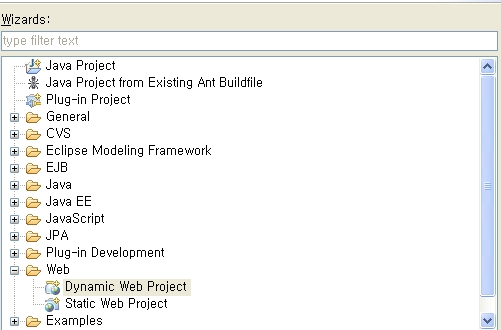
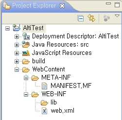
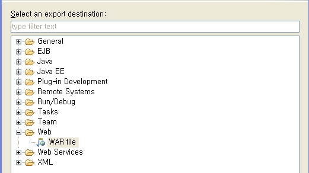
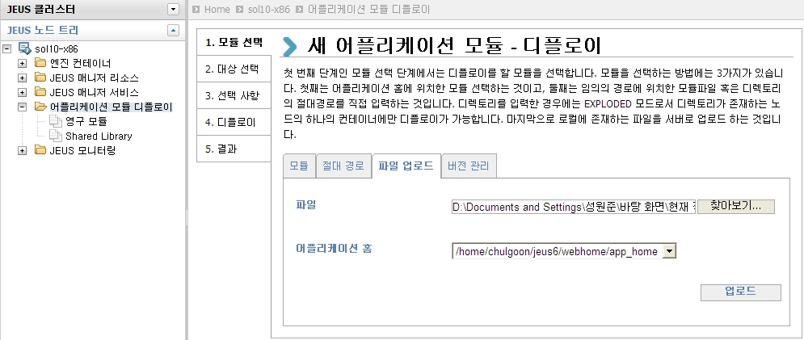
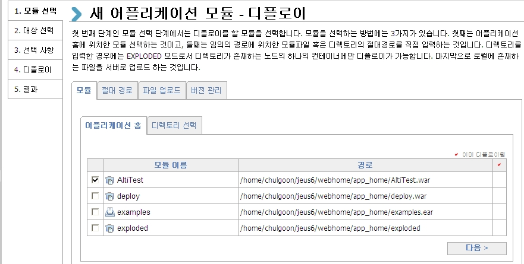

위에서 ALTIBASE와 JEUS의 연동 방법에 대해서 알아봤다면, 본 절에서는 위 Node 설정을 이용하여 Altibase에 접속 및 쿼리를 수행함으로써 ALTIBASE와 JEUS의 연동을 확인해본다.
Pool 사용 샘플 예제
<%@ page import="javax.naming.*" %>
<%@ page import="java.sql.*" %>
<%@ page import="javax.sql.*" %>
<%
Connection con=null;
Statement st=null;
ResultSet rs=null;
try
{
InitialContext ctx = new InitialContext();
DataSource ds = (DataSource)ctx.lookup("DataSource1");
con=ds.getConnection();
st=con.createStatement();
rs=st.executeQuery("select * from dual");
while(rs.next())
{
out.println("TABLE_NAME :" + rs.getString(1)+"<br>");
}
}
catch(Exception e)
{
out.println("Error:" + e.getMessage());
e.printStackTrace();
}
finally
{
if(rs!=null)rs.close();
if(st!=null)st.close();
if(con!=null)con.close();
}
%>
getConnection 사용 샘플 예제
<%@ page import="java.util.*"%>
<%@ page import="java.sql.*"%>
<%
Connection conn = null;
PreparedStatement pstmt = null;
ResultSet rs = null;
String db_url = "jdbc:Altibase://127.0.0.1:20300/mydb";
String db_user = "sys";
String db_passwd = "manager";
String enc = "KO16KSC5601";
Properties props = new Properties();
props.put("user", db_user);
props.put("password", db_passwd);
props.put("encoding", enc);
try {
try {
Class.forName("Altibase.jdbc.driver.AltibaseDriver");
conn = DriverManager.getConnection(db_url, props);
out.print(" Connection ok" + "<br>" );
} catch (Exception e) {
out.println("### CONN ERROR=>" + e.toString() + "###" + "<br>");
}
String Query = "select * from dual";
pstmt = conn.prepareStatement(Query);
String get_1 = null;
try {
rs = pstmt.executeQuery();
while(rs.next()) {
get_1 = rs.getString(1);
out.println(" get_1 = " + get_1 + "<br>");
}
} catch (Exception e) {
out.println("### SELECT ERROR=>" + e.toString() + "###" + "<br>");
}
} catch (Exception e) {
out.println("### ERROR=>" + e.toString() + "###" + "<br>");
try {
conn.rollback();
} catch(Exception ex) {
out.println("### rollback ERROR=>" + ex.toString() + "###" + "<br>");
} // end of try
} finally {
try {
conn.close();
} catch(Exception ex) {
out.println("### close ERROR=>" + ex.toString() + "###" + "<br>");
} // end of try
} // end of try
%>
실행 방법
WebAdmin을 사용하여 JSP 파일을 디플로이한 후에 테스트하는 방법에 대해서 설명한다.
디플로이는 어플리케이션의 서비스들을 시작하기 위해서 JEUS에 모듈 파일을 올리고 제어하는 모든 동작을 일컫는 작업을 의미한다.
JEUS에는 EJB 모듈(.jar 파일), 웹 어플리케이션 모듈(.war 파일), 리소스 어댑터 모듈(.rar 파일) 등을 업로드하여 디플로이 할 수 있으며, 하나의 모듈로 구성된 Standalone 모듈도 Java EE 어플리케이션의 한 종류로 디플로이 할 수 있다.
샘플 테스트에서는 위에서 제공한 샘플 예제를 이용하여 WAR 파일을 작성하고, JEUS 서버에 디플로이하여 실행시키는 방법에 대하여 설명한다. 다른 모듈들을 업로드하여 디플로이 하는 방법에 대해서는 JEUS 매뉴얼 중 “Deployment” 부분을 참조하면 된다.
샘플 테스트에서 사용하는 WAR 파일은 이클립스를 사용하여 생성하였다.
1. 이클립스를 실행시켜서 File New Project 를 선택한 후에 다음의 Wizard 에서 Web “Dynamic Web Project” 를 선택하여 프로젝트 이름을 설정한다.

2. 다음과 같이 프로젝트가 생성이 되면, 위의 샘플 예제를 JSP 파일로 생성하여 “WebContent” 디렉토리 밑에 추가해준다.
Lib 폴더에는 Altibase.jar 파일을 추가해준다.
 |
|

3. JSP 파일과 Altibase.jar 파일을 추가했으면, File Export 를 선택하고, Web “War file” 를 선택하여 생성할 경로를 지정해주면 WAR 파일이 생성된다.

4. WAR 파일이 생성되면, WebAdmin 노드 트리에서 “어플리케이션 모듈 디플로이” 파일 업로드 탭을 선택하여 해당 WAR 파일을 업로드 한다.

5. 파일이 업로드 된 후에 업로드 한 모듈을 디플로이 한다. 디플로이가 된 모듈의 이름(WAR 파일의 이름)이 예제 파일을 실행시키는 경로가 된다.

6. 디플로이가 완료되면 인터넷 창을 띄워서 다음과 같은 URL을 입력하여 실행시키면 된다.
http://server_ip:8088/모듈이름/jsp 파일 이름 예) http://192.168.1.76:8088/AltiTest/test.jsp
{kind=link}
{kind=link}
{kind=link}
{kind=link}
{kind=link}
{kind=link}